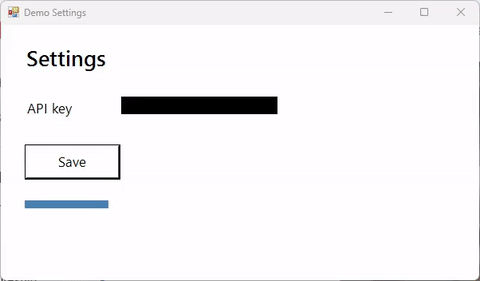

SCREENCAST-MCP / WORKFLOWS / REC 01
Bug-repro clip for a PR
A reviewer understands a bug faster from five seconds of video than from five paragraphs. The agent records the repro, finds and covers anything secret on screen, cuts it to the moment that matters, points at the problem, and hands back a GIF that fits GitHub's 10 MB limit.
Record the Demo Settings window while I click Save. Then hide the API key, trim it to the save, put a box on the Save button saying it hangs, and give me a GIF for the PR.
start_recording → find_text → redact_region → trim → callout → export_gif. Paths are shortened; every value is from a real run.
- start_recording { "target": "window:Demo Settings", "fps": 15 }Matches the window by title and records just its frame.{ "sessionId": "rec-…", "matchKind": "exact", "region": { "width": 602, "height": 352 } }
- stop_recording { "sessionId": "rec-…" }Quits ffmpeg cleanly so the mp4 is finalized.{ "durationSec": 7.07, "finalizedGracefully": true }
- find_text { "input": "rec-….mp4", "timestamp": 0.5, "query": "sk-[\\w-]+", "regex": true, "redact": true }Windows OCR reads the frame and returns a padded rectangle for each match. Match on a prefix: OCR read this key's
liveas1ive.{ "matchCount": 1, "redactRegions": [{ "x": 152, "y": 121, "width": 196, "height": 22 }] } - redact_region { "input": "rec-….mp4", "regions": [{ "x": 152, "y": 121, "width": 196, "height": 22 }] }Covers the rectangle for the whole clip (a solid box by default;
stylecan be blur or pixelate).{ "outputPath": "redact-….mp4", "regions": 1 } - find_text { "input": "redact-….mp4", "timestamp": 0.5, "query": "sk-" }Check the redaction worked before anything leaves the machine.{ "matchCount": 0 }
- trim { "input": "redact-….mp4", "start": 0.5, "end": 5 }{ "outputPath": "trim-….mp4" }
- callout { "input": "trim-….mp4", "items": [
{ "type": "box", "x": 28, "y": 178, "width": 128, "height": 50, "from": 0.3, "to": 2.6, "color": "red" },
{ "type": "text", "x": 170, "y": 188, "text": "Save hangs for 2.5 s", "size": 22, "color": "red", "from": 0.3, "to": 2.6 } ] }Timed annotations, drawn only while the bug is on screen.{ "outputPath": "callout-….mp4", "callouts": 2 } - export_gif { "input": "callout-….mp4", "width": 480, "fps": 10, "maxBytes": 2000000 }Steps fps, width, and colors down until the file fits the budget.{ "sizeBytes": 71206, "withinBudget": true, "settings": { "fps": 10, "width": 480, "colors": 256 } }

Drop the GIF into the PR description. find_text is best-effort: OCR can miss small or stylised text, so look at a frame before you share. If you know where a secret sits, pass the rectangle to redact_region yourself.